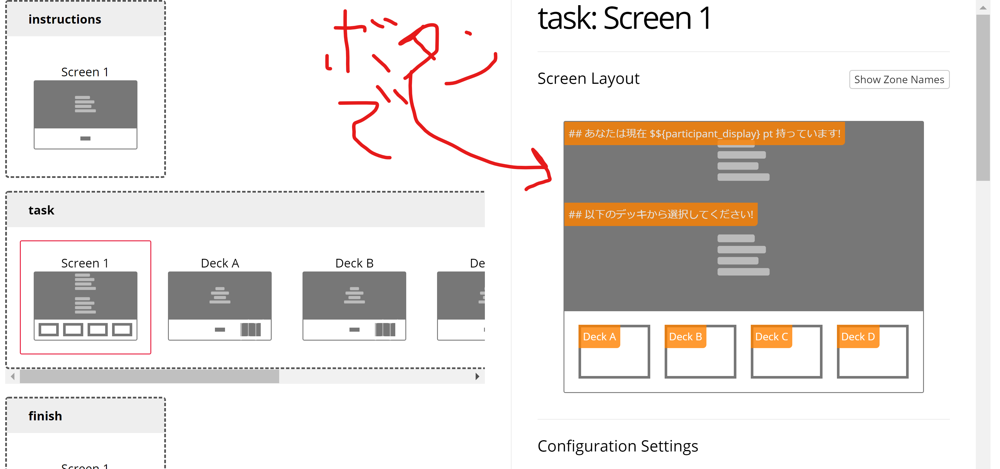

Gorilla.scでオンライン実験ができるよって話
オンライン実験、、、したくない？
最近は便利なものでjspsychやPsychoPyあたりが、心理実験課題の作成によく使われる。しかしそれらをオンラインでやるとなると、サーバーだのなんだの色々と調べたりすることがあって大変である。
特に、「やべぇ！今すぐ実験作って先生に見せないと！」とか「やべぇ！研究費の報告があるから急いで使い切るために残り3日でオンライン実験をしなきゃ！」って時にゼロからいきなり運用可能なレベルでのオンライン実験課題を作成するのは相当苦労するであろう。知らんけど。
そういう時に提案したいのが、 Gorilla である。
どういう人におすすめか
Gorilla.scは以下のような感じの人におすすめ。
- プログラム言語とかサーバーとか難しいことわからん
- でもオンラインで心理実験をやりたい
- 課題作成も出来る限り楽なやつがいい
- 共同研究者と一緒に作業可能だと嬉しい
- 行った実験課題をOpenにしたい
基本は『オンライン実験課題作成に必要となるであろうコストをカットしたい』というのがモチベであろう。
Gorilla.scの欠点と言えば以下の通りだ。
- オンライン実験につきものの問題（timing issue)
- 有料(一人分のデータ保存にアカデミックで約1ドル)
後でちゃんと参考文献を紹介するが、Gorillaは参加者ごとの回線やブラウザの問題をわたしにはわからない"ECMAScript"だの"QRTEngine"だので、できる限りTiming issue (反応時間のずれ) を回避しようとしている。えらい。なので実質問題は有料であること、のみである (個人の感想です)。
どういうシステム？
公式HPにもある通り、アカウント作成および実験課題の作成は無料でできる。
ではいつお金が必要なのか？それは実験課題で測定したデータを保存するときである。実験で測定されたデータをオンライン上で保存するときにTokenと呼ばれるものが必要になる。このTokenは2020年3月現在はアカデミック価格一人1.08ドル（約120円）である。ちなみにPsychopyで作成したものなどをオンラインで使用するためのPavloviaも似たようなシステムを採用しており、こちらは一人0.2£ (約30円)である。
いやいやわかる。「Gorillaの方が高いやんけ！」とゴリラのごとく石を投げたくなる気持ちもわかる。一応以下でGorillaがいかに優れているかを簡単に書いておこう。
信頼と実績の実験Hostingを提供
実験心理学者がオンライン実験をするとき、気になるのが『反応時間を測定する際に、環境によってどの程度ノイズが入っちゃうんだろう…』ということであろう。安心してほしい。その疑問にはAnwyl-Irvine et al. (2020)で調査済みである。
この論文では、『Gorilla最高ウホ』ということを示すために、ケータイレベルのネット回線を含むいろんな環境の子供たちやProfilic (欧州のMturkみたいなやつ) でフランカー課題 (反応時間を測定する課題) を適用し、環境による反応時間に差がないことや分散が想定よりも小さい (ある程度信頼できる反応時間を測定できる) ことを明らかにしたのである。イントロダクションにはそれを実現する技術的なバックグラウンドも紹介しているので興味のある方はしっかり目を通すとよい。Gorillaとそれ以外の環境との違い？知らん。
充実のサポートコンテンツ
まずはコチラを見てほしい。Dot probe課題、IAT、確率学習課題 (2WFC)、N-back課題などよく名だたる心理学実験課題のデモが体験できる。
どういうことか？「やべぇ！いますぐIAT作らなきゃ！！」とかいうとき、このデモをそのままコピーすればよいのだ。ズボラな研究者にはたまらないね。あとは画像を入れ替えて条件を増やしたりするだけでよい。すごくない？
そもそも実験課題は以下のようなGUI（ボタンぽちぽち）で作られる。

課題の作成方法の詳細は公式に勝るガイドラインなし、ということで公式サポートを確認するとよい。動画も組み合わせつつ多種多様な例が紹介されてるので、あなたの「したい」がきっと見つかる（適当）
その他の利点として、作成した実験課題を使いまわすことができたり、アカウントを持つ共同研究者と共同で実験課題を確認出来たり、実際に行った実験課題をGorilla上でオープンにすることができる（例：Gorilla最高ウホ論文で用いたフランカー課題の詳細）
まとめ
お金に余裕があり、オンライン実験課題の作成コスト (サーバーの管理、ネット環境ごとの信頼性検証など) をできるだけ下げたい場合にはGorilla.scが選択肢の一つに挙げられるだろう。
ちなみにここから登録すると、20Token分までは半額 (約60円) で買えるゾ！それでもPavloviaよりも二倍高いじゃねーか？そうだね！ゴメン！！
ゴリラ使ってお手軽にオンライン実験を試してみようじゃないか、って記事でした！
ほな。